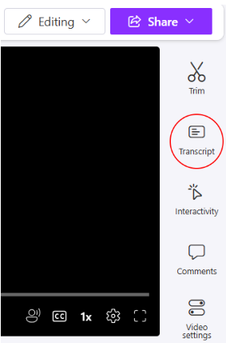
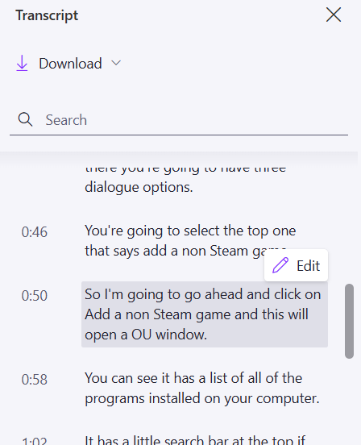
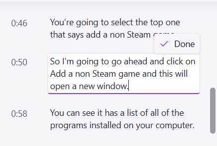

Since Clipchamp’s captions are auto-generated, it is important to ensure that they are accurate. Luckily, Clipchamp allows you to edit them via the time-stamped transcript, giving you a convenient way to make quick changes. Note: You can only edit the content of closed captions on Clipchamp since their style is platform dependent.
Open a video in Clipchamp's player page.
From the right sidebar, click Transcript. A slide menu appears.
If you don't see Transcript in the side bar, make sure you've generated a transcript/captions (see:

Making use of the time stamps, scroll through the auto-generated transcript until you find text you’d like to edit, and hover over it. Click Edit. The Edit button is replaced with a Done button and a text cursor appears within the textbox. Any changes you make to the transcript will also appear in the closed captions.

Make any changes you want within the text, then click Done (or press the Enter key).
An Edit button appears.

You may need to refresh the player page to see the changed captions. On Clipchamp, viewers can change the size and color of the closed captions to suit their individual needs.